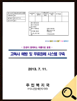
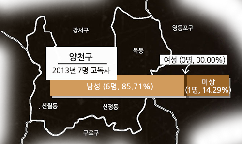
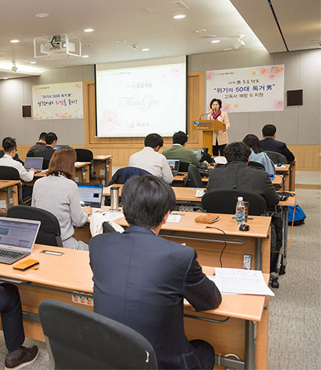
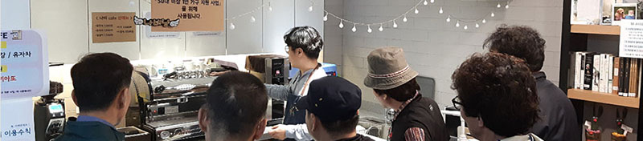
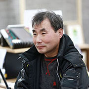
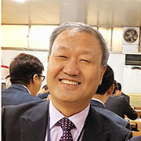

복지 사각지대의 고독사
"홀로 생을 살아가던 사람이 사망 후 3일이 지난 뒤 발견된 죽음"으로 정의되는 고독사.
'무연사'라는 이름으로 일본 사회에 충격을 준 고독사 현상이 어느덧 한국에서도 나타나기 시작했다.
고령화, 1인 가구의 급증, 전통적 가족문화의 단절과 가족 해체, 그리고 빈곤층이 급증했기 때문이다.

무연사회[NHK]

실태보고 한국인의 고독사[KBS]
[2013년 서울시 고독사 확실사례 성별현황]
[2013년 서울시 고독사 확실사례 연령 현황]
경제적 부양책임을 다하지 못하고 가족과의 연결과 유대가 끊긴 50대 남성들.
그들은 사회적 삶에서 고립된 채 건강이 악화되고 홀로 죽음을 맞이했다.
50대 중장년층은 근로 연령층으로 여겨지면서
복지서비스의 초점은 영유아와 노년층에 집중되었다.
고독사를 예방하는 대책 역시 노인에게 맞춰졌을 뿐이다.
복지의 사각지대에 50대 층이 놓여 있었다.

[2013 양천구 고독사 대책
"고독사 예방 및 무료장례 시스템 구축" 자료]


나비남, 세상과 만나다
"어려운 경제상황으로 실직, 이혼 등이 증가함에 따 홀로 사는 중년남성들이 계속 늘어나고 있으며, 이들은 홀몸어르신에 비해 오히려 자살, 고독사 등 더 큰 위험에 노출되어 있는 것으로 조사되고 있습니다."
고독사의 고 위험층이 50대임을 인식하면서, 양천구는 2017년 2월 1일부터 3월 10일까지 관내 50세 이상 만 64세 이하 남성 1인 가구에 대한 전수조사를 실시했다. 총 6,481가구가 그 대상이었다.
구청장 당부사항
(제189호, 제190호)
고위험 : 3가지 이상 복합 문제
중위험 : 1~2가지 문제
저위험 : 일시적 지원으로 해결가능

2017년 양천구는 "'나비(非)', 나는 혼자가 아니다"라는 모토로, 고독사 등 삶의 위기에 처해있는 50대 남성에 대한 종합지원체계를 전국 최초로 추진했다.
종합지원체계는 동지역사회보장협의체, 양천 50대독거남지원협의체, 나비남 멘토단, 50스타트센터 총 4개 축으로 구성되었으며, 위기에 놓여있는 이들의 복합적인 문제를 해결하여 '공동체로의 복귀'를 지원하고, 나아가 도움을 받았던 '멘티'에서 다른 사람들에게 도움을 주는 '멘토'로의 회복을 목표로 삼았다
2017년 03월 23일,서울시청,
나비남 프로젝트 기자설명회
보도자료, 양천구청
세상과 관계 맺기
빈곤 등 삶의 위기는 사회적 관계의 단절을 가져오고, 사회적 관계에서의 고립은 위기를 해결할 수 있는 기회의 접근을 어렵게 만든다.악순환을 끊기 위해서 문제 해결과 더불어 고립의 극복, 즉 관계 맺음이 필요했다.
그 첫 걸음으로 양천구는 위기 독거남성들의 멘토단을 모집하고 총 95명을 선정했다.이들은 위기 독거남성에게 월 1회 이상의 방문, 주 1회 이상 연락을 수행하며, 친구이자 지지자, 조력자 역할을 맡았다
"제 멘티님이 몸이 안 좋아서 병원에 다닐 때 보호자 역할을 해서 많이 같이 다니고, 다른 지원들도 받게 해드렸는데, 그런 지원을 다 받고 난 다음에 '내가 몸이 좋아지면 저도 나중에 길에 있는 쓰레기라도 주워서 사회에 환원하고 싶어요'라고 말씀하셨어요" (멘토로 참여한 주민) 출처:양천구, 뉴솔루션(2018),나비남프로젝트 평가연구보고서
민·관의 문제해결
삶의 위기와 관계의 고립이라는 이중고에 처해있는 위기 독거남설들을 어떻게 사회로 복귀시킬 수 있을까?
그들이 처해있는 복합적인 문제를 해결하고, 사회로 다시 복귀시키기 위해서는 구청 뿐 아니라 민간과 지역공동체의 노력이 함께 필요했다.
위기의 50대 남성을 위해 지역의 다양한 기관과 단체가 힘을 모아 50대 독거남지원협의체를 구성하였다.
50대 독거남지원협의체는 도시락과 반찬 나눔 등 먹거리에서부터 집단프로그램을 통한 관계형성지원,
그리고 전문상담과 무료검진 등 전문분야까지 폭넓은 지원사업의 추진과 함께 위기사례별 맞춤형 지원을 실시하였다.
- 2017.03.10. 고독사 예방을 위한 유관기관 업무협약 체결 : 양천구, 양천소방서, 서울남부준법지원센터, 한국법무보호복지공단 서울지부)
- 2017.03.15. 양천 50대 독거남지원협의체 구성 : 병원, 종교기관, 경찰서, 소방서, 복지관, 대형마트 등 35개 기관의 민관협력을 통한 지원체계 마련 대상자(10만원)와 후원기관(15만원)이 매월 25만원 저축해 연 300만원의 생활준비금 마련.
- 동지역사회보장협의체 및 복지관 등 민관 지원사업 실시(2017년 총 52개, 2억 5천여만원)

2017년 03월 10일 고독사 예방을
위한 유관기관 업무협약 협약서, 양천구
2017년 03월 15일, 양천구 50대
독거남지원협의체 협약식, 양천구

공동체로의 복귀와 관계의 회복은 경제적 지원으로만 가능하지 않다.
오랜 고립으로 정서적으로 피폐해진 심리적 상태를 회복해야
건강한 관계맺음이 다시금 시작되고 또 지속될 수 있었다.
정서지원을 위하여 독거남지원협의체와 사회적기업들의 참여와 지원이 이루어졌다.
그리고 지속된 관계맺음은
자조모임으로 이어져 활발한 활동을 통해 사람들에게 희망을 나누어주고 있다.
50스타트센터 힐링커피 아카데미
2017년 별별청춘 오춘기 다시 날다

동주민센터
및 동지역사회보장협의체 활동 사진
50대 독거남성 대다수는 갑작스런 실업, 사업 부도 등 경제적 위기를 겪으며 고립된 삶에 처하는
경우가 많았다.
양천구는 그들이 다시금 빈곤에서 벗어나 스스로 자기 삶을 책임질 수 있는 자립 지원 프로그램을 진행했다.
취업 교육, 일자리 정보 제공 등의 일자리 연계 프로그램과 자립기반을 위한 매칭펀드가 그 대표적인 사업이었다.
- 2017년 12월 28일. 신월6동 동주민협의회, (주)양천환경과 연계하여 나비남에게 취업면접과 일자리 추진.
- 2019.02~2020.02. 한사랑교회, 뉴코리아전자통신, 등촌교회의 후원으로 나비남 매칭펀드 사업실시.
대상자(10만원)와 후원기관(15만원)이 매월 25만원 저축해 연 300만원의 생활준비금 마련.
- 나비남 일자리지원 프로젝트(양천지역자활센터) : 일반경비원 신입교육, 시간제 자활근로(세탁사업단, 공공자전거 사업단) 연계
- 자존감 회복을 위한 일자리 지원(고용노동부 남부지청) : 건강관리 및 노후준비, 힐링프로그램 등 각종 취업특강을 통해 자존감 회복
2017년 12월 28일 나비남
취업연계 보도자료, 양천구

2019년 04월 05일 희망일자리
제공 업무협약식 보도자료, 양천구
2019년 나비남
매칭펀드 약정서, 양천구
커뮤니티 공간마련
위기의 50대 독거남성을 위하여 50대 독거남성을 위하여 다양한 기관과 단체가 동참하면서 각 사업을 안정적으로 지원하고,
다양한 관계망을 형성할 수 있는 거점이 필요했다.
양천구는 /inst_05.png사회복지관과 함께 50스타트 센터를 개소하고 공동운영을 시작했다.
센터는 민·협력의 거점 역할을 수행하면서 참여기관의 자원을 공유하고 지원방안을 모색했다.
나비카페 운영을 통해 50대 독거남성과
지역주민들이 함께 어우러지는 쉼터를 제공하고 독거남지원협의체와 함께 맞춤형 전문상담을 진행했다. 그리고 힐링커피 아카데미와
50+ 열린 영화제 등 다양한 정서지원과 기술교육을 실시했다. 또한 이들이 함께 고립을 극복할 수 힘을 얻도록 자조모임을 지원했다.
"믹스커피만 마셔봤고 다른 커피에 대해서는 전혀 몰랐다. 처음으로 아메리카노를 알게 되고 만드는 방법을 배우게 되어서 설레고 기분이 좋았다.내가 직접 내린 커피를 맛보고 다른 사람들과 나눠 마신다는 게 의미가 있었다. 수업이 끝나도 우리끼리 만나서 자주 시간을 보내면 좋겠다. (50스타트센터 프로그램 참여자 소감)
- 2017.07.03. 50스타트 센터 개소
- 2018년 이용현황 : 전화 827, 내방 712, 방문 1,153, 카페이용 886, 기타 793.

50스타트센터 브로셔
50스타트센터 이용 사진
희망을 찾아
독거남성의 사회복귀를 위해 자존감을 회복하고, 자신의 목소리를 사회에 드러내는 정서적 지원프로그램의 일환으로
'예술교육'이 진행됐다. 2017년 별별청춘 사업의 일환으로, 독거남들이 직접 자신들의 이야기를 담아 영화를 제작해 상영했던
나비남 영화제는 양천구의 지속적인 후원으로 2019년 9월, 제3회 나비남 영화제로 계속 이어졌다.
2018년에는 서서울예술교육센터에서
미술교육이 진행되는 한편, 신정2동 등 개별 동 지역에서도 스마트폰을 이용한 사진교육을 진행하여 사진전이 열리기도 했다.
"돈으로만 지원해줬다면 그것으로 끝났을 거예요. 영화제를 준비하면서 재미있게, 즐겁게 할 수 있다는 걸 배웠어요. 저도 누군가에게 돌려줄 수 있는 힘을 배웠고, 얻었어요. ··· 내가 이 프로그램을 선택했으니, 오늘 주인공 자리에 설 수 있었던 겁니다. 선택한 자만이 느낄 수 있는 마음입니다. 영화제가 제 삶의 또 다른 시작이라고 생각합니다. 나비남 영화제 덕분에 행복했고, 지금도 행복합니다." (강oo 감독)
- 2017.11.17. [2017 나비남 영화제] 개최.
- 2018.11.29. [2018 나비남 영화제] 개최.
- 2018.06.~09. 신월3동, 서서울예술교육센터 [다같이 놀자, 예술 한바퀴!] 프로그램 운영
- 2018.06.~12. 신정2동, [마음으로 찍고 사진으로 소통하는 힐링포토, "나도 사진작가"] 프로그램 진행 및 사진전 개최.
- 2019.09.06. [2019 나비남 영화제] 개최
2018년 서서울예술교육센터
다같이 놀자 예술 한바퀴, 양천구
2018년 신정2동
나도 사진작가 사진전, 양천구
나비남 영화제 사진
(2017, 2018, 2019)
나비남으로써 지원을 받던 50대 독거남성들은 지역사회에서 다양한 활동을 하고 있다.
스마트폰을 이용해 사진전을 열고, 영화제를 개최했다.
자조모임을 통해 함께 연습하고 지역행사에서 공연을 했다.
더 어려운 주민을 위해 봉사하고, 텃밭에서 키운 농작물을 이웃과 나누었다.
다양한 이들의 도움을 통해 멘티에서 멘토로 거듭난 이들은 이제 다른 사람들에게 도움이 나누고 있다.
동주민센터 및
동지역사회협의체 봉사활동

동주민센터 및 동지역사회협의체
텃밭-김장 나누기 활동

자조모임 별난두드림 활동
나는 혼자가 아니다
고독사 고위험군인 50대 독거남성에 대한 고독사 예방프로그램 나비남 프로젝트를 최초로 실시한 양천구의 시도는 호평 속에 타지역으로 점차 확산되기 시작했다.
- 29개 자치단체 벤치마킹. (노원, 성동, 용산, 성북 등 8개 자치구, 여수 등 21개 자치단체)
- 2018.04. 서울시 고독사 예방 종합대책 발표
- 2018.08. 보건복지부 주관 [2017년 지역사회보장계획 시행결과 평가] 서울시 자치구 1위, 전국 4위로 우수상 수상

2018년 04월 06일
서울시 고독사 예방 종합대책, 서울특별시
2018년 10월 11일 2018 보건복지부
지역복지사업평가 우수상 수상, 양천구청
2017년 시작된 고독사 예방프로그램 나비남 프로젝트는 현재 진행형이다.
공동체로의 복귀는 단기간에 해결될 수 있는 문제가 아니기 때문이다.
양천구는 나비남지원사업을 2021년까지 주민자치회로 확대하여 복지사각지대를
해소하는 방안을 추진하고 있다.
그리고 동지역사회보장협의체, 양천 50대독거남지원협의체, 나비남 멘토단, 50스타트센터 또한 위기의 독거남성들이 다시 사회로 복귀할 수 있도록 지금도 노력하고 있다.
나비남, 참여자들의 이야기
2017년부터 진행되고 있는 나비남 프로젝트에는 다양한 이들이 참여했다.
나비남 프로젝트는 사람들에게
어떤 영향을 미쳤고, 사람들은 그 프로젝트를 어떻게 기억하고 있을까?
프로젝트에 참여했던 이들의 이야기로 직접 확인해보자.
강명식 감독

신준식 목사

| 제작 | 알엠소프트 |
|---|---|
| 기록제공 | 양천구청 |
| 한빛종합사회복지관 | |
| 신정종합사회복지관 | |
| 목동종합사회복지관 | |
| 신월종합사회복지관 | |
| 신목종합사회복지관 | |
| 글자와기록사이 | |
| 재미누리협동조합 | |
| 트루팍프로덕션 | |
| 신준식 목사 | |
| 강명진 감독 | |
| 조용식 감독 | |
| Last Updated 2019.10.22 | |